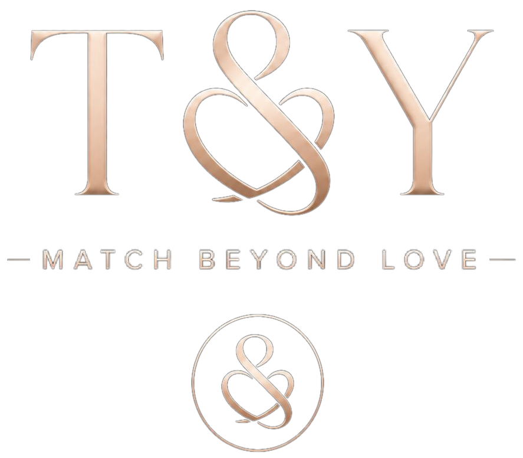
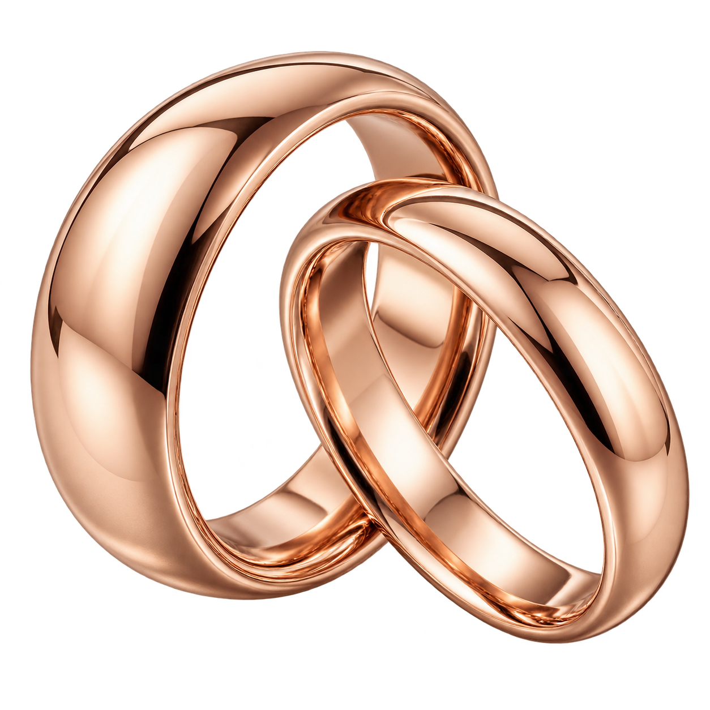

Mostrar quién eres
Tu carácter y tu proyecto de vida cuentan más que un álbum perfecto.

Para hombres que buscan una relación estable
Tu cuestionario habla por ti: tus valores, tus proyectos y cómo entiendes una relación. Conoce mujeres que buscan construir contigo.
Empieza gratis. Avanza a tu ritmo.

Más allá de una foto
Tu carácter y tu proyecto de vida cuentan más que un álbum perfecto.
Compara valores, familia y expectativas antes de invertir tiempo en conversar.
Conoce a quien también quiera conocerte, cuando ambos tengan el acceso habilitado.
Match beyond love
Menos conversaciones en el vacío. Más motivos para conocerse.
Valores, acuerdos y el deseo de construir juntos.
Cómo funciona
Empieza gratis con las fichas Básica y Física. Responde manualmente, a tu ritmo.
Explora candidatos ordenados por compatibilidad. La comparación gana información a medida que ambos avanzan.
Con una suscripción puedes completar todas las fichas, Premium y los cuatro tramos de Match. Son hitos, sin cobros adicionales.
Descubre candidatos y muestra interés con tres reacciones gratuitas. Si es mutuo, podéis suscribiros para avanzar. Para escribir, completad el cuestionario y subid al menos cinco fotos, con suscripción vigente. En parejas, el chat se abre con una invitación aceptada.
Un recorrido claro
$11/semana · $33/mes · $55/bimestreUSD · elige un plan. Renovación automática hasta cancelar. Busco pareja y Amigos del alma se contratan por separado.
Gratis
Fotos, candidatos sin nombre y su perfil básico compartido.
$11
Renovación automática cada semana.
$33
Renovación automática cada mes.
$55
Renovación automática cada dos meses.
Tres reacciones gratuitas para mostrar interés: ✨ Me gustan tus intereses, 💬 Conectemos para hablar y 👍 ¡De acuerdo, conectemos! Si el interés es mutuo, podéis suscribiros para dar el siguiente paso. Las reacciones no abren chat. Para enviar mensajes en ambos modos necesitas suscripción vigente, cuestionario completo y al menos cinco fotos. Puedes recibir sin pagar. Parejas: ambos terminan Match, suben cinco fotos y aceptan «¿Quieres hablar?» y «¡Sí, hablemos!» para abrir. Amistad: chat directo tras cumplir los requisitos. Al vencer se conserva el historial y la recepción; se bloquean todos los envíos. El pago no aumenta la compatibilidad.
Una mirada más profunda
Una lectura de vuestros caminos de vida, afinidades, ciclos y puntos de trabajo, con recomendaciones para conversar y construir acuerdos.
$110 USD por pareja
Tengo pareja: una cuenta, pago único. Segundo estudio de numerología: $55.
Una lectura de las cartas natales y la compatibilidad desde la tradición védica, para explorar recursos y desafíos del vínculo.
$220 USD por pareja
Tengo pareja: una cuenta, pago único. Segundo estudio de Jyotish: $110.
Cuatro horas en total. El profesional decide cómo distribuirlas: por ejemplo, dos sesiones de dos horas o una de cuatro horas.
$330 USD · cuatro horas
Pago único, independiente de los estudios.
Servicios opcionales, separados de las suscripciones. Numerología y Jyotish: segundo estudio de cada disciplina al 50%; la asesoría no incluye este descuento. Contratación y agenda reales aún no disponibles.
Antes de empezar
Para Busco pareja y Amigos del alma se elige una suscripción recurrente: $11/semana, $33/mes o $55/bimestre. Cada modo se contrata por separado. Puedes cancelar la próxima renovación y conservar el período pagado.
Sí. Puedes enviar y recibir tres reacciones gratuitas en ambos modos. Si hay interés mutuo, podéis suscribiros para completar el perfil avanzado y preparar vuestra conversación. Las reacciones no permiten mensajes escritos ni abren una conversación.
Con suscripción vigente, cuestionario completo y al menos cinco fotos. Pagar por sí solo no habilita la escritura. Puedes recibir mensajes sin pagar y responder gratis con una reacción predefinida.
Se conservan tus respuestas y conversaciones. Vuelves al perfil básico y candidatos sin nombre. Puedes recibir mensajes, pero no enviar ni responder, tampoco en chats anteriores.
No. Son hitos del perfil incluidos con tu suscripción vigente. No hay cinco chats gratuitos ni cargos por abrir cada chat.
Sí. Cada respuesta o área pequeña tiene un control. Nadie puede comprar una parte oculta. La información sensible necesita tu autorización expresa para mostrarse.
Sí, se guarda el borrador automáticamente. La publicación romántica mantiene revisión mensual; la privacidad y la retirada de permisos se pueden cambiar en cualquier momento.
Compara respuestas y preferencias. Con pocos datos es provisional; el pago no aumenta el resultado ni garantiza una relación. Amistad muestra número de coincidencias, sin porcentajes.
No. Numerología $110 y Jyotish $220 son pagos únicos por estudio desde una sola cuenta. El segundo de cada disciplina tiene 50% de descuento. Asesoría profesional de pareja: $330 por cuatro horas, pago único y sin ese descuento.
Esta es una vista previa. El registro, cobros, conversaciones y reservas reales todavía no están conectados.
Dar el paso
Menos conversaciones en el vacío. Más motivos para conocerse.
Fotografía ilustrativa de la marca.
Tu próximo paso
Estamos preparando la apertura. Esta vista previa no recoge correos ni realiza cobros.